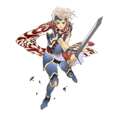
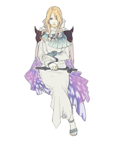
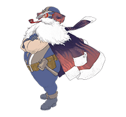

7 |
プロローグとキャラクター紹介 |
 |
かつての戦いが終わりを告げ、 バロン国第一王子セオドアは、 魔物の群れの襲撃を受ける「赤き翼」。

セオドアバロン王国の王子。かつて世界を救った国王セシルと王妃ローザの間に生まれ、周囲に期待をかけられていることに疑問を感じている。 
セシル月の民の血を引く聖騎士。大国バロンを治める王の座についても、周囲への気づかいを忘れず、兵や民からの信頼も厚い。

ローザバロン王国王妃となった白魔道士。王妃として愛するセシルを陰から支えている。多感な年齢となったセオドアを心配している。 
カイン元バロン王国の竜騎士。己の心の弱さを克服すべく試練の山へと篭もるが、その後の行方を知るものはいない。

シドバロン王国の飛空艇技師。ヒゲは白くなったが、隠居するつもりなど毛頭なく、現場で腕をふるっている。セシルたちのよき理解者で、セオドアの祖父代わり。 |
 |
 |
 |